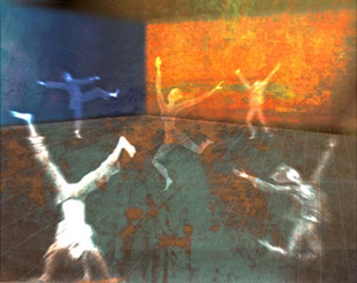

Jago Titcomb
Illustrations
Jago Titcomb
Illustrations
Jago Titcomb is a 22 year-old student of illustration at the Falmouth College of Arts (UK). He holds a BA in Illustration with honors. He works almost entirely digitally, using Photoshop with a Wacom tablet and a mixture of scanned, painted, drawn and photographic sources. He says he tries to produce images that are not obviously digital. His art is not intended to stand alone but to illustrate children's books and stories.
